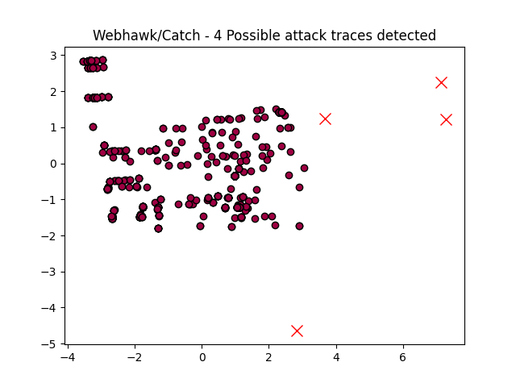

Webhawk Catch ReportUnsupervised learning Web logs/OS processes attack detection. Date: 03/06/25 at 08:39:40 GMTLog file: /Users/walid/Downloads/access.log.2025-05-26 Log type: apache logs Findings: 4 |
 |
| Severity | Related CVE(s) | Line# | LLM Insights | Log line |
| High | No CVE found | 311 | This HTTP log entry appears suspicious due to the presence of a bot signature ("Bytespider# spider-feedback@bytedance.com") and the mobile user agent, which could indicate a potential crawler or scraper attempting to harvest data. The absence of a referrer URL also raises concerns about a possible automated request. | 47.128.37.80 - - [26/May/2025:09:46:09 -0700] "GET /?fbclid=IwAR2Oi2RjCZ9s8oGeA596YEOpmb4zLR3UWVewNjDe7Q4L-TXMeFXy5DA-Iso HTTP/1.1" 200 13184 "-" "Mozilla/5.0 (Linux# Android 5.0) AppleWebKit/537.36 (KHTML# like Gecko) Mobile Safari/537.36 (compatible# Bytespider# spider-feedback@bytedance.com)" |
| High | CVE-2009-3890 CVE-2008-6811 CVE-2008-3362 CVE-2007-2757 CVE-2006-4743 CVE-2006-3390 CVE-2006-2667 CVE-2005-4463 CVE-2005-1688 CVE-2007-6318 CVE-2007-3639 CVE-2007-1894 CVE-2007-1277 CVE-2007-1230 CVE-2006-3390 CVE-2006-0986 CVE-2005-4463 CVE-2005-1688 |
364 | This log entry indicates a potential vulnerability. The request to `wp-content/plugins/google-seo-rank/index.php` is likely an attempt to exploit a plugin weakness, as the correct file name should be `index.php`. A 301 redirect suggests that the server has been manipulated to serve this incorrect file, potentially allowing an attacker to inject malicious code or escalate privileges. | 52.169.13.43 - - [26/May/2025:10:40:20 -0700] "GET /wp-includes/theme-compat/wp-conflg.php/wp-content/plugins/google-seo-rank/index.php HTTP/1.1" 301 585 "-" "-" |
| High | CVE-2009-3890 CVE-2008-6811 CVE-2008-3362 CVE-2007-2757 CVE-2006-4743 CVE-2006-3390 CVE-2006-2667 CVE-2005-4463 CVE-2005-1688 CVE-2007-6318 CVE-2007-3639 CVE-2007-1894 CVE-2007-1277 CVE-2007-1230 CVE-2006-3390 CVE-2006-0986 CVE-2005-4463 CVE-2005-1688 |
365 | This log indicates a successful GET request to the wp-includes/theme-compat directory, however, it's being blocked due to a 429 Too Many Requests error, suggesting brute-force attempts or high traffic from the IP address (52.169.13.43). This could be an indication of a botnet attack targeting WordPress plugins, highlighting a potential vulnerability that requires immediate attention and mitigation. | 52.169.13.43 - - [26/May/2025:10:40:20 -0700] "GET /wp-includes/theme-compat/wp-conflg.php/wp-content/plugins/google-seo-rank/index.php HTTP/1.1" 429 430 "-" "-" |
| High | CVE-2021-27693 |
862 | From a security perspective, this log entry raises concerns due to the unusual request. The request is for a `.ashx` file with an action parameter `catchimage`, which could be indicative of a potential vulnerability in the application. Additionally, the client's user agent appears to be fake or spoofed ("Windows NT 10.0# Win64# x64"), suggesting possible malicious activity such as botnet traffic. | 103.46.184.15 - - [26/May/2025:23:46:57 -0700] "GET /content/plugins/ueditor/net/controller.ashx?action=catchimage HTTP/1.1" 404 291 "http://www.baidu.com/" "Mozilla/5.0 (Windows NT 10.0# Win64# x64) AppleWebKit/537.36 (KHTML# like Gecko) Chrome/85.0.4183.121 Safari/537.36" |